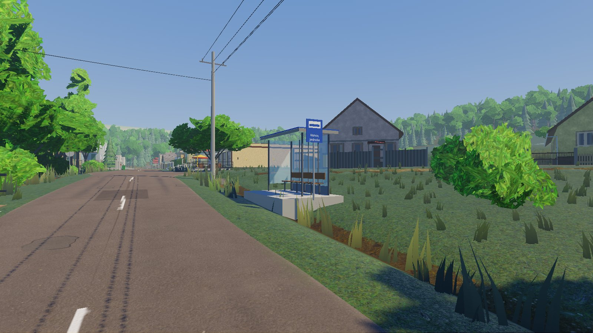
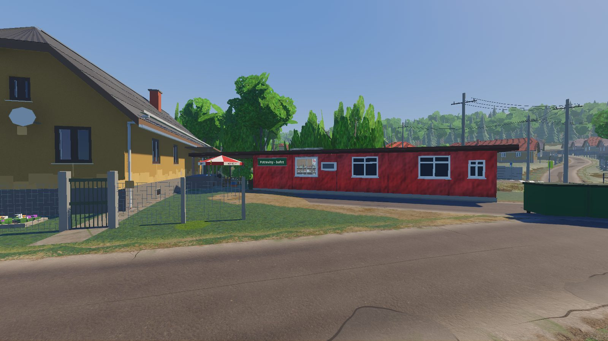

Konečne viem, o čom je hraI finally know what the game is about
Vkupovačka: starý zvyk z Honiec, ku ktorému bude smerovať celá hra.
Vkupovačka: an old custom from Honce that the whole game will build up to.

…tak som si začal robiť hru…so I started making a game
Ako som začal, ako to celé funguje, čo som sa zatiaľ naučil a čo ma serie.
How I started, how it all works, what I have learned so far and what drives me nuts.